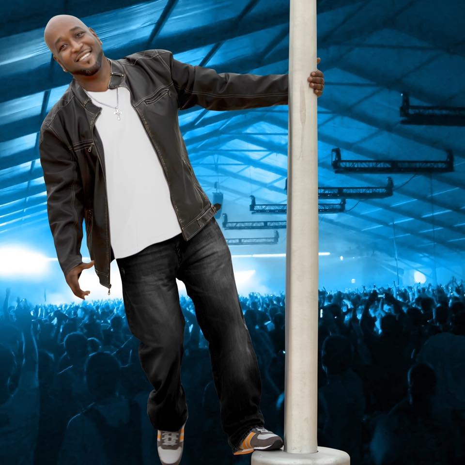

-
Martone CEO
No stranger to the world of music, Martone’s years of experience in television, radio, and now music have earned him both recognition and respect. Martone first realized his passion for entertainment after a televised performance at his first school play at the tender age of seven years old. Originally from Lansing, Michigan, he is often described as an impassioned visionary, poised to become one of the most recognized names in the entertainment industry.
... The positive feedback from the audience at a young age, no doubt helped to cement his determination to succeed. At the age of 13 years old, Martone became one of the youngest television producers/directors at Continental Cablevision public access producer’s course and produced his very own music video program called Video Control. Video Control aired on channel 37 Monday nights at 10:00 p.m. for 13 seasons. During that time, Martone had the opportunity to interview such celebrities as Will Smith, Queen Latifah, En Vogue, Vanilla Ice, Public Enemy, UNV, and many more. Soon after the conclusion of Video Control, Martone moved to Detroit, Michigan to pursue his passion and further his education in television production and graduated from Specs Howard School of Media Arts. From there he wanted to take his career in television to a higher level, sadly due to the economic downturn of 2008, it was not meant to be. Initially, the song had been scheduled for release on March 1, 2019, but due to the success of Good Love, he did not want to interfere with the promotion of that song. So, Love Out Loud was released on May 31, 2019, to critical acclaim. On November 21, 2019, Martone won The Silver Medal Award for Outstanding Achievement with the Erogenous Zone album in the Electronic Dance Music category. On March 17, 2020, Martone was nominated for a Detroit Music Award for Outstanding Electronic Recording Erogenous Zone. Due to COVID-19, Martone did not attend the awards ceremony. Due to the worldwide pandemic, and the social unrest of 2020, Martone was unable to perform due to social distancing, and mandatory shutdowns. Later in the year, a few people had started planting the seed asking when and if he was going to bring the radio station back. “I knew that I wanted to do it, but it has to be done the right way, it needs to be bigger and better than before.”On October 27, 2020, Martone incorporated IRMIX Radio, LLC and set a relaunch date of Monday, March 1, 2021, exactly eight years to the day when IRMIX Radio premiered the first time. Upon the relaunch of IRMIX Radio in March 2021, listeners can expect to be able to stream the station anywhere in the world through IRMIX Radio’s website, a ROKU television app, and a monthly magazine that will be available for order only upon demand. The station will still offer the initial staples of the terrestrial programming but seeks to add high-quality talk shows and seeks to serve as a one-stop-shop for all thing’s entertainment and more.“It is my mission to create a legacy that will last beyond me, IRMIX Radio is here to stay.” Show More -
 LA Jackson Senior Account Executive – lajackson@irmixradio.net
LA Jackson Senior Account Executive – lajackson@irmixradio.netA valedictorian and contributing author to nationally published Bernard Percy books during elementary school, L.A. finished high school in Brooklyn, then went off to college in Los Angeles and graduated from Georgia State University in Atlanta before the writing bug really hit.
... An internship led to a 10-year marketing job with CBS Records/Sony Music, where L.A. worked with almost every act on the record label, implemented dozens of sales/marketing campaigns, received numerous gold/platinum albums, awards, and traveled throughout the U.S., Canada, and Jamaica attending industry events. Becoming a recording studio owner, audiovisual technician, and manager for a global audiovisual company, L.A. now owns media company MKM Multimedia Works and in 2001, executive-produced the Million Mom March’s Atlanta Artists Against Gun Violence compilation CD, which featured top Atlanta based recording acts. In 2002, L.A. secured an international commercial with The GAP for Grammy-winning Arrested Development’s Baba Oje. Additional projects and music-related books are currently underway, as L.A. initiates his ‘6 books in 5 years’ plan, starting with MUSICOLOGY 2101: A QUICK START GUIDE TO MUSIC ‘BIZ’ HISTORY now available on Amazon. With a clear vision of where he wants to go, L.A. is at his best working with successful people towards a unified goal. A quote that L.A. picked up from mentor/author/educator Bernard Percy (bernardpercy.com) is: “Everything turns out right in the end – if it isn’t right, it isn’t the end.” Follow L.A. Jackson at www.facebook.com/damusicmonLA is very excited to be apart of the IRMIX Radio team and is looking forward to sharing his knowledge and experience to tap into its unlimited potential and growth. Show More -
 Ahsan Raza – HR Hiring Manager
Ahsan Raza – HR Hiring Manager Ahsan Raza, I believe in creativity and proactive policies. I focus on planning and coordination. I am thinker and Researcher. In one short word, I am a facilitator.
-
 Arricca Oberlin – Senior Account Executive email arricca@irmixradio.net
Arricca Oberlin – Senior Account Executive email arricca@irmixradio.netAn account Executive with IRMIX Radio as of Dec 7th, 2020. Arricca will provide our clients with a friendly and fun experience when working with the IRMIX Radio advertising team. ...Arricca looks forward to making an abundance of new friends. In New York, Arricca was a member of the Calcium Fire Department Auxiliary. She did fundraising for the department, along with assisting in emergency situations. Arricca previously worked in management and sales for many national companies. “I am excited to dedicate my future to IRMIX Radio and our clients. I am passionate about making lifetime connections. ” She said. Show More
-
 Donia Collier – Senior Account Executive donia@irmixradio.net
Donia Collier – Senior Account Executive donia@irmixradio.netEven in current times, I believe in the Power of human kindness, integrity, respect, human connection, loyalty, music, love, slow dancing, a fair deal, a spirited game of Spades, great food, the Beauty of Diversity, laughter, & providing exceptional & memorable service. My professional history includes years of Entrepreneurship, Management,
... & Sales; an East coast Regional Buyer & Distributor; a Creative Director for an online magazine, for which I also co-authored concert reviews & took photos that were published in that same magazine; & the year 2021 will mark my 8 th year as a Registered Tax Preparer. Professional accomplishments have been accepting a position that came with the challenge of turning a company almost $1M dollars in debt into a profit-producing machine & we accomplished our goal in 10 short dynamic months. I’ve proudly accepted Top Sales certificates & plaques. Finding myself in the media pit at concerts, the excited frenzy of the crowd surrounding me & I’m capturing pictures of artists that I’ve listened to & loved for over half of my life was Incredible! Sharing backstage & open access with these legendary artists marked a proud achievement. Greatest memories from trade show trips as a Regional Buyer; if suitcases could only talk, honey, the stories they would tell!! Vegas, Miami Beach & New Jersey; a niche industry, where everyone encouraged everyone else to succeed. Proving it true: THERE IS ENOUGH FOR EVERYONE TO EAT. & countless moments that turned teams of strangers into fast friends. Personal accomplishments/contributions are co-coaching 4 years of girls’ youth softball; humbly serving lunches at a local homeless shelter; many years of volunteering in my children’s schools, tutoring young readers, assisting with the school store, & both Accelerated Reader & Accelerated Math. I volunteered to run a fundraiser to automate our Elementary School Library & together, those amazing children sold over $10,000 in cookie dough & popcorn, marking the most successful 1 st time Elementary fundraiser in that company’s history. I’ve had a lifelong love affair with diversity & the energy of human connection. Every day I aim to make others smile, pay random genuine compliments, hold doors open, Love My Children, Family & Friends with all my heart, make a difference in my life by making a difference in the lives of others & (in my Snoop Dogg voice) MAKE MONEY EVERY DAY! Many clients have become cherished friends & IRMIX Radio provides a platform that offers unlimited potential for growth, service & success. This Is About More Than Business; It Is About The Relationships! “People will forget what you said, People will forget what you did, but people will never forget how you made them feel.” – Maya Angelou. If music speaks to the soul & my soul’s frequency vibes on slow R&B, Baby! Show More -
 Staff Writer – Eman Khalid eman@irmixradio.net
Staff Writer – Eman Khalid eman@irmixradio.netEman Khalid is a writer, storyteller, researcher, blogger, and journalist. She has been a co-author of more than twenty poetry books. She is a contributing writer to the Women’s Republic Magazine, the Walled City Journal, the LATEST, Fashion360 Magazine, Luxe Kurves Magazine, BlackIvy Media, Alvis #180DegreesImpact, Soulivity Magazine, and the Real Arts Daily Production.
... Working as a Press Director for a non-profit organization named Unity for Equality, Eman Khalid is an English Language and Literature student with a profound passion for learning. Her writings mostly revolve around the topics of mental health, depression, anxiety, societal issues, history, female empowerment, emotional well-being, and spirituality. When she is not writing, you will find her reading history books, binge-watching murder documentaries on Netflix, listening to songs, stargazing, taking long walks at the beach, and capturing the beauty of nature through her camera lens. Show More -
 Sophie Farrell – Staff Writer sophie@irmixradio.net
Sophie Farrell – Staff Writer sophie@irmixradio.netSophie is an outgoing, energetic English and Journalism student with an exceptional aptitude for research and composition. She collaborated on the Emmanuel College chapter of the Hercampus online magazine by providing content that is both a resource and a source of entertainment. IRMIX Radio is happy to have Sophie on board, and we know that she brings added value to a team that is welcoming her with open arms.
-
 Katrina Yang
Katrina Yang Katrina Yang is a blues musician, artist, writer, journalist, and humanitarian. Being exposed to literature and art growing up, Katrina started her writing journey at a very young age. At the age of 14, Katrina published her first eBook and was signed by 17k.com as a serial novel writer.
... She then traveled to Tibet, Southwest of China, Japan, Thailand, and the United Kingdom to study different music traditions and cultures while journaling her experience. In 2018, she came to the United States to pursue a bachelor's degree in fine art, majoring in Music Performance and Composition at California Institute of the Arts. During her stay, Katrina had the chance to dive deep into Hip Hop, R&B, and rap culture in the Los Angeles area. As a humanitarian, Katrina cares deeply about the ongoing crisis, social injustice, and others' welfare. In \n2018, she joined the Crisis Text Line as a crisis counselor to provide help and emotional support to people going through a hard time. In 2020, Katrina joined Coach Art as a music instructor offering free lessons to children with chronic disease. With her educational background in music and experience as a writer and humanitarian, she brings a unique perspective. Show More -
 Lamont Hicks- Video Produccer
Lamont Hicks- Video Produccer Lamont Hicks is a professional freelance video editor, writer, producer, and social media curator, with over fifteen years of experience. He has worked as an editor for such projects as Industry Revue, and VH1’s “Madonna Dearest” web series. In addition, Lamont has created numerous viral video content.
... Most notably, singer Janet Jackson shared his tribute video to the victims of the Orlando massacre. Which was set to Jackson’s socially conscious song “Shoulda Known Better” from her 2015 album Unbreakable. The video was uploaded to her official YouTube channel and shared on all of her social media platforms. Lamont also manages popular pages on the YouTube, Twitter, Instagram, and Facebook platforms. He has over 200,000+ followers across all of these platforms. Accumulating millions of views for the content that he has created and shared. Articles: Billboard write-up of Janet Jackson sharing Lamont’s content: https://www.billboard.com/articles/news/7407935/janet-jackson-orlando-shooting-video-tribute VH1’s Madonna Dearest web series(Lamont served as editor, writer, and producer on this web series)https://www.youtube.com/watch?v=69EJGAC35fo Animated content from Lamont’s personal YouTube channel(He co-wrote, produced, directed this web series, and voiced one of the main characters)https://www.youtube.com/watch?v=Fcm6icaQ2gg Show More -
 Rich Yeaboah - Web Developer
Rich Yeaboah - Web DeveloperRich Yeboah is a web developer that is able to build responsive web applications from the ground-up from landing pages, navigation, and layouts to terminal commands. Skilled at writing well-designed, and efficient code with current practices in web development. He is a fast learner, dedicated, and team player who is proficient in an array of scripting languages and multimedia Web tools. We at IRMIX Radio are happy to have Rich as part of the family.